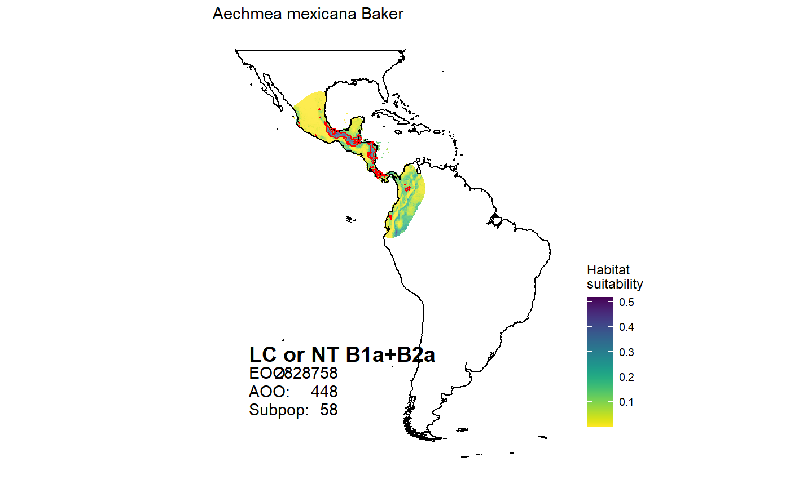

map_species.RdProduces distribution maps for all species in the selection
map_species(scientific = NULL, canonical = NULL, genus = NULL, subfamily = NULL, life_form = NULL, assessment = NULL, range_size = NULL, model = "suitability", polygon = TRUE, iucn = TRUE)
| scientific | a character vector of full scientific names including authorities, of the species of interest |
|---|---|
| canonical | a character vector of canonical names, of the species of interest. |
| genus | a character vector of genera names to select. |
| subfamily | a character vector of subfamily names to select. |
| life_form | a character vector of life forms to select. |
| assessment | a character vector of conservation assessment to select. |
| range_size | a vector of two numericals with the minimum and maximum range size (in square kilometres), to select. |
| model | character string. If “binary” presence absence per 100 km grid cell is plotted, if “suitability” the modelled habitat suitability is plotted. |
| polygon | logical. If TRUE, an outline of the range polygon is plotted. |
| iucn | logical. If TRUE a legend with the conservation assessment is added to the plot. |
a plot for each selected species .
Modelled ranges are available for 542 species, range polygons for 2395 species. For species with model distribution, the range polygons are based on the models, otherwise on a convex hull around available occurrence records, or a 50 km buffer for species with less than 3 occurrence records available. See Zizka et al 2019 for methods.
map_species(canonical = "Aechmea mexicana")#> OGR data source with driver: ESRI Shapefile #> Source: "C:\Users\az64mycy\AppData\Local\Temp\RtmpghjxF8", layer: "ne_50m_land" #> with 1420 features #> It has 3 fields #> Integer64 fields read as strings: scalerank#>#> Warning: Ignoring unknown parameters: datum#>